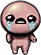
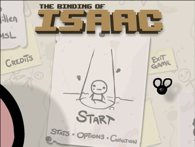
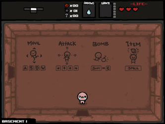
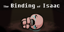

The Binding of Isaac
Dieser Artikel wurde für die folgenden Ubuntu-Versionen getestet:
Ubuntu 14.04 Trusty Tahr
Zum Verständnis dieses Artikels sind folgende Seiten hilfreich:
Ein Terminal öffnen, optional
Root-Rechte, optional

The Binding of Isaac  - Isaacs Mutter erhält von Gott den Auftrag ihren Sohn Isaac zu opfern. Dieser flieht in den Keller seines Elternhauses. Hier trifft er in den zufällig generierten Dungeons auf geistesgestörte Gegner, verlorene Geschwister, Schätze, Bosse und letztendlich auf den Endgegner: seine Mutter.
- Isaacs Mutter erhält von Gott den Auftrag ihren Sohn Isaac zu opfern. Dieser flieht in den Keller seines Elternhauses. Hier trifft er in den zufällig generierten Dungeons auf geistesgestörte Gegner, verlorene Geschwister, Schätze, Bosse und letztendlich auf den Endgegner: seine Mutter.
Ende Mai 2012 wurde eine Erweiterung namens Wrath of the Lamb veröffentlicht. Damit wurde die Zahl der Schätze, Errungenschaften, Bosse und Endgegner deutlich erhöht (mehr als verdoppelt). Das Spielprinzip ist identisch, es gibt allerdings mehrere Endgegener, die man nacheinander besiegen muss.
Mit der biblischen Geschichte hat das Spiel lediglich den Titel gemeinsam.
|  |  |
| Hauptmenü | Tutorial |
Installation¶
The Humble Voxatron Debut¶
Das Spiel aus der Aktion The Humble Voxatron Debut als .deb-Paket herunterladen und installieren [1].
Das Spiel ist unter "Anwendungen -> Spiele -> The Binding Of Isaac" zu finden.
The Humble Bundle 7¶
Die Erweiterung Wrath of the Lamb war Bestandteil des Humble Indie Bundle 7 und konnte dort sowohl als .deb-Paket, als auch als Adobe Flash-Datei heruntergeladen werden (Dateiendung .swf).
Die Flash-Datei kann in jedem Browser gespielt werden, der Flash darstellen kann. Dazu im Browswer einfach die Spieledatei als lokale Datei öffnen.
Bedienung¶
Ein Tutorial führt den Spieler in die Bedienung des Charakters ein. Die Steuerung von Isaac erfolgt über die Tastatur.
| Menü | |
| Menüpunkt | Beschreibung |
| "Start" | Spielstart |
| "Stats" | Statistiken einsehen. |
| "Options" | Detailgrad, Vollbild- / Fenstermodus, Musikeinstellungen, Auflösung, Controls |
| "Collection" | Gefundene Objekte. |

Infobox¶
| The Binding of Isaac | |
| Originaltitel: | The Binding of Isaac |
| Genre: | Action |
| Sprache: | |
| Veröffentlichung: | 2011 |
| Publisher: | Edmund McMillen |
| Systemvoraussetzungen: | 2.5 GHz Prozessor / 1 GB Arbeitsspeicher / ca. 50 MB Festplattenplatz |
| Medien: | CD (1) |
| Strichcode / EAN / GTIN: | |
| Läuft mit: | Flash / nativ |

- Erstellt mit Inyoka
-
 2004 – 2017 ubuntuusers.de • Einige Rechte vorbehalten
2004 – 2017 ubuntuusers.de • Einige Rechte vorbehalten
Lizenz • Kontakt • Datenschutz • Impressum • Serverstatus -
Serverhousing gespendet von